건축기사 (2013-06-02 기출문제)
1과목: 건축계획
1. 은행의 건축계획에 관한 설명으로 옳지 않은 것은?
- 고객이 지나는 동선은 되도록 짧게 한다.
- 영업실의 면적은 행원수 ×(4~5m2) 정도로 한다.
- 규모가 큰 건물에 은행을 계획하는 경우, 고객 출입구는 최소 2개소 이상 설치하여야 한다.
- 일반적으로 출입문은 안여닫이로 하며, 전실을 둘 경우에 바깥문은 밖여닫이 또는 자재문으로 하기도 한다.
(정답률: 85%)

2. 도서관 출납시스템 형식 중 자유개가식에 관한 설명으로 옳은 것은?
- 서고와 열람실이 통합되어 있다.
- 도서열람의 체크시설이 필요하다.
- 책의 내용 파악 및 선택이 어렵다.
- 대출절차가 복잡하고 관원의 작업량이 많다.
(정답률: 84%)
3. 레드번(Redburn) 주택단지계획에 관한 설명으로 옳지 않은 것은?
- 중앙에는 대공원 설치를 계획하였다.
- 주거구는 슈퍼블록 단위로 계획하였다.
- 보행자의 보도와 차도를 분리하여 계획하였다.
- 주거지 내의 통과교통으로 간선도로를 계획하였다.
(정답률: 75%)
4. 다음 중 방위에 따른 주택의 실배치가 가장 부적절한 것은?
- 동 - 침실, 식당
- 서 - 부엌, 화장실, 가사실
- 남 - 식당, 아동실, 가족거실
- 북 - 냉장고, 저장실, 아틀리에
(정답률: 84%)
5. 주택의 평면과 각 부위의 치수 및 기준척도에 관한 설명으로 옳지 않은 것은?
- 치수 및 기준척도는 안목치수를 원칙으로 한다.
- 층높이는 2.4m 이상으로 하되, 5cm를 단위로 한것을 기준척도로 한다.
- 거실 및 침실의 평면 각 변의 길이는 10cm를 단위로 한 것을 기준 척도로 한다.
- 계단 및 계단참의 평면 각 변의 길이 또는 너비는 5cm를 단위로 한 것을 기준척도로 한다.
(정답률: 65%)
6. 엘리베이터를 이용하는 서비스대상 건축물의 교통 수요승객의 집중시간 분석을 하려고 한다. 백화점의 경우 일반적으로 적용되는 승객 집중시간은?
- 일요일 개장 직후
- 일요일 정오 전후
- 금요일 오후 6시 전후
- 토요일 오후 3시 전후
(정답률: 83%)
7. 다음 중 시티 호텔에 속하지 않는 것은?
- 커머셜 호텔
- 터미널 호텔
- 클럽 하우스
- 레지덴셜 호텔
(정답률: 79%)
8. 주심포 형식에 관한 설명으로 옳지 않은 것은?
- 공포를 기둥 위에만 배열한 형식이다.
- 장혀는 긴 것을 사용하고 평방이 사용된다.
- 부재가 전체적으로 정연하게 가공되고 조각이 많아 인공성이 강하다.
- 맞배지붕이 대부분이며 천장을 특별히 가설하지 않고 서까래가 노출되어 보인다.
(정답률: 59%)
9. 종합병원의 건축형식 중 분관식(pacilion type)에 설명으로 옳지 않은 것은?
- 평면 분산식이다.
- 채광 및 통풍 조건이 좋다.
- 일반적으로 3층 이하의 저층건물로 구성된다.
- 재난시 환자의 피난이 어려우며 공사비가 높다.
(정답률: 89%)
10. 학교건축계획에 요구되는 융통성과 가장 거리가 먼 것은?
- 지역사회의 이용에 의한 융통성
- 학교운영방식의 변화에 대응하는 융통성
- 광범위한 교과내용의 변화에 대응하는 융통성
- 한계 이상의 학생수의 증가에 대응하는 융통성
(정답률: 79%)
11. 극장의 평면 형식 중 애리나형에 관한 설명으로 옳지 않은 것은?
- 무대의 배경을 만들지 않으므로 경제성이 있다.
- 무대의 장치나 소품은 주로 낮은 가구들로 구성
- 연기는 한정된 액자 속에서 나타나는 구성화의 영향을 준다.
- 가까운 거리에서 관람하면서 가장 많은 관객을 수용할 수 있다.
(정답률: 87%)
12. 호텔 객실의 평면계획에서 침대 및 가구의 배치에 영향을 끼치는 요인과 가장 거리가 먼 것은?
- 객실의 층수
- 반침의 위치
- 욕실의 위치
- 실폭과 실길이의 비
(정답률: 77%)
13. 공동주택의 단위주거 단면구성 형태에 관한 설명 으로 옳지 않은 것은?
- 플랫형은 주거단위가 동일층에 한하여 구성되는 형식이다.
- 복층형(메조네트형)은 엘리베이터의 정지 층수를 적게 할 수 있다.
- 트리플렉스형은 듀플렉스형보다 프라이버시의 확보율이 낮고 통로면적이 많이 필요하다.
- 스킵 플로어형은 주거단위의 단면을 단층형과 복층형에서 동일층으로 하지 않고 반층씩 엇나게 하는 형식을 말한다.
(정답률: 85%)
14. 미술관의 자연채광법 중 정측광 형식에 관한 설명으로 옳은 것은?
- 전시실의 중앙부를 가장 밝게 하여 전시벽면의 조도를 균등하게 한다.
- 전시실의 측면창에서 직접 광선을 사입하는 방법으로 소규모 전시에 적합하다.
- 측광식과 정광식을 절충한 방법으로 청장 높이 가 3m를 넘는 경우에는 적용할 수 없다.
- 관람자가 서 있는 위치의 상부에 천장을 불투명하게 하여 중앙부는 어둡게 하고 전시벽면에 조도를 충분하게 하는 방법이다.
(정답률: 51%)
15. 사무소 건축의 코어 유형에 관한 설명으로 옳지 않은 것은?
- 중심코어형은 구조코어로서 바람직한 형식이다.
- 편단코어형은 기준층 바닥이 작은 경우에 적합하다.
- 양측코어형은 단일용도의 대규모 전용사무실에 적합하다.
- 외코어형은 2방향 피난에 이상적인 관계로 방재상 유리한 형식이다.
(정답률: 78%)
16. 오토 바그너(Otto Wagner)가 주장한 근대건축의 설계지침 내용으로 옳지 않은 것은?
- 경제적인 구조
- 그리스 건축양식의 복원
- 시공재료의 적당한 선택
- 목적을 정확히 파악하고 완전히 충족시킬 것.
(정답률: 84%)
17. 다음 설명에 알맞은 공장건축의 레이아웃(layout) 형식은?
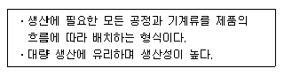
- 고정식 레이아웃
- 혼성식 레이아웃
- 제품중심의 레이아웃
- 공정중심의 레이아웃
(정답률: 87%)
18. 그리스 아테네의 아크로폴리스에 위치한 에렉테이온(Erechtheion)의 형식은?
- 도리아식
- 코린트식
- 이오니아식
- 콤포지트식
(정답률: 61%)
19. 상점의 동선계획에 관한 설명으로 옳지 않은 것 은?
- 고객동선은 가능한 길게 한다.
- 직원동선은 가능한 짧게 한다.
- 상품동선과 직원동선은 동일하게 처리한다.
- 고객출입구와 상품 반입/출 출입구는 분리하는 것이 좋다.
(정답률: 84%)
20. 학교건축에서 분산병렬형 배치계획에 관한 설명으로 옳지 않은 것은?
- 놀이터와 정원이 생긴다.
- 구조계획이 간단하고 시공이 용이하다.
- 부지를 최대한 효율적으로 사용할 수 있다.
- 일조⋅통풍 등 교실의 환경조건이 균등하다.
(정답률: 69%)
2과목: 건축시공
21. 건축공사관리에서 원가절감수단으로 옳지 않은 방법은?
- 재료 및 외주공사를 조기 계약하여 공사이익 확보
- 품질을 확보하여 재시공 및 보수억제
- 직영인부의 투입인원 증가
- 경쟁력을 갖춘 전문업체의 발굴
(정답률: 84%)
22. 벽돌벽에 발생하는 백화를 방지하는 방법으로 옳지 않은 것은?
- 줄눈 모르타르에 석회를 넣어 사용한다.
- 흡수율이 적고 소성이 잘 된 벽돌을 사용한다.
- 구조적으로 차양, 돌림띠 등의 비막이를 설치한다.
- 파라핀 도료 등의 뿜칠로서 벽면에 방수 처리를 한다.
(정답률: 86%)
23. 다음 중 공통가설공사에 해당하지 않는 것은?
- 가설울타리
- 현장사무소
- 공사용수
- 비계
(정답률: 69%)
24. 연약점토의 점착력을 판정하기 위한 지반조사 방법으로 가장 알맞은 것은?
- 표준관입시험
- 베인테스트
- 샘플링
- 탄성파탐사법
(정답률: 80%)
25. 토량 470m3를 불도저로 작업하려고 한다. 작업을 완료하기까지의 소요시간을 구하면? (단, 불도저의 삽날용량은 1.2m3, 토량환산 계수는 0.8, 작업휴율은 0.8, 1회 싸이클 시간은 12분 이다.)
- 120.40 시간
- 122.40 시간
- 132.40 시간
- 140.40 시간
(정답률: 61%)
26. 목재를 천연건조 시킬 때의 장점이 아닌 것은?
- 비교적 균일한 건조가 가능하다.
- 시설투자 비용 및 작업 비용이 적다.
- 시간적 효율이 높다.
- 옥외용으로 사용 시 예상되는 수축, 팽창의 발생을 감소시킬 수 있다.
(정답률: 84%)
27. 석재의 주용도를 표기한 것으로 옳지 않은 것은?
- 화강암 - 구조용, 외부장식용
- 안산암 - 구조용
- 응회암 - 경량골재용
- 트래버틴 - 외부장식용
(정답률: 53%)
28. 콘크리트의 크리프에 관한 설명으로 옳지 않은 것은?
- 습도가 높을수록 크리프는 크다.
- 물-시멘트 비가 클수록 크리프는 크다.
- 콘크리트의 배합과 골재의 종류는 크리프에 영향을 끼친다.
- 하중이 제거되면 크리프 변형은 일부 회복된다.
(정답률: 72%)
29. AE제, AE감수제 및 고성능 AE감수제를 사용하는 콘크리트의 적정 공기량은 콘크리트 용적 대비 얼마인가? (단, 굵은 골재의 최대치수가 20mm이며 환경은 간혹 수분과 접촉하여 결빙이 되면서 제빙화학제를 사용하지 않는 경우)
- 1 %
- 3 %
- 5 %
- 7 %
(정답률: 61%)
30. 기준점(bench mark)에 대한 설명으로 옳지 않은 것은?
- 바라보기 좋고 공사에 지장이 없는 곳에 설치한다.
- 공사 착수전에 설정되어야 한다.
- 이동의우려가 없는 곳에 설치한다.
- 기준점은 가장 중요한 장소에 1개만 설치한다.
(정답률: 90%)
31. 플라이애쉬를 콘크리트에 사용함으로써 얻을 수 있는 장점에 해당되지 않는 것은?
- 워커빌리티가 개선된다.
- 건조수축이 적어진다.
- 초기강도가 높아진다.
- 수화열이 낮아진다.
(정답률: 78%)
32. 기획, 설계, 시공까지의 전 과정에 대하여 건설 산업을 보다 효율적이고 경제적으로 수행하기 위해서 각 부문의 전문가들로 구성된 집단의 통합된 관리 기술을 건축주에게 서비스하는 계약 방식은?
- 턴키 계약 방식
- CM 방식
- 프로젝트 관리 방식
- BOT 방식
(정답률: 76%)
33. 콘크리트 혼화제 중 AE제를 첨가함으로써 나타나는 결과가 아닌 것은?
- 철근과의 부착강도 증진
- 내구성 증진
- 동결융해 저항성 증대
- 압축강도 감소
(정답률: 61%)
34. 철골용접에 관한 설명 중 옳지 않은 것은?
- 금속아크용접이란 용접봉과 용접될 모체 금속에 전류를 보내서 전기아크를 일으켜 이 때 생기는 열로 용접봉과 모재를 동시에 녹이는 방식이다.
- 위핑(Weeping)이란 용착 금속과 모재가 융합하지 않고 겹쳐져 있는 상태를 말한다.
- 루트(Root)란 맞댄 용접에 있어 트임새 끝의 최소 간격을 말한다.
- 그루브(Groove)용접이란 두 부재간의 사이를 트이게 한 홈에 용착 금속을 채워 용접하는 것이다.
(정답률: 67%)
35. 콘크리트의 시공성에 영향을 주는 요인에 대한 설명으로 옳지 않은 것은?
- 단위수량이 커지면 컨시스턴시는 증가한다.
- 슬럼프가 과도하게 커지면 굵은골재의 분리와 블리딩량이 증가한다.
- 동일 슬럼프에서 공기량이 증가하면 단위수량은 감소한다.
- 기온이 올라가면 슬럼프는 증가한다.
(정답률: 53%)
36. 말뚝시험에 관한 설명 중 옳지 않은 것은?
- 시험말뚝은 3개 이상으로 한다.
- 말뚝은 연속적으로 박되 휴식시간을 두지 말아야 한다.
- 최종 침하량은 최후 타격시의 참하량을 말한다.
- 시험말뚝은 사용말뚝과 똑같은 조건으로 한다.
(정답률: 61%)
37. 골재의 함수 상태에 따른 설명으로 옳지 않은 것은?
- 절건상태 : 골재를 100℃ ~ 110℃의 온도 상태에서 중량 변화가 없어질 때까지 건조하여 골재 속의 모세관 등에흡수된 수분이 거의 없는 상태
- 기건상태 : 골재를 공기 중에 24시간 이상 건조하여 골재 속에 수분이 없는 상태
- 표건상태 : 내부는 포화상태이나 표면은 수분이 없는 상태
- 습윤상태 : 골재의 내부는 이미 포화상태이고, 표면에도 수분이 있는 상태
(정답률: 70%)
38. 건축공사에서 활용되는 언더피닝(Under Pinning) 공법에 대한 설명으로 옳은 것은?
- 용수량이 많은 깊은 기초 구축에 쓰이는 공법이다.
- 기존 건물의 기초 혹은 지정을 보강하는 공법이다.
- 터파기 공법의 일종이다.
- 일명 역구축 공법이라고도 한다.
(정답률: 66%)
39. 벽면적 4.8m2 크기에 1.5B 두께로 붉은 벽돌을 쌓고자 할 때 벽돌소요 매수로 옳은 것은? (단, 표준형 벽돌을 사용하며, 할증율은 3%로 한다.)
- 374매
- 743매
- 1,108매
- 1,487매
(정답률: 81%)
40. 품질관리(Quality control)활동의 도구에 해당되지 않는 것은?
- 기능계통도
- 특성요인도
- 파레토도
- 히스토그램
(정답률: 84%)
3과목: 건축구조
41. 강구조 접합의 모살용접에 대한 설명으로 옳지 않은 것은?
- 필렛용접이라고도 한다.
- 모살용접의 유효면적은 유효길이에 유효목두께를 곱한 것으로 한다.
- 모살용접의 유효길이는 모살용접의 총길이에서 모살사이즈 s의 3배를 공제한 값으로 한다.
- 모살용접의 유효목두께는 모살사이즈의 0.7배로 한다.
(정답률: 78%)
42. 그림과 같은 등변분포하중이 작용하는 단순보의 최대휨모멘트 Mmax는?
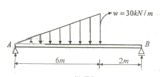
- 25√3kN∙m
- 25√2kN∙m
- 90√3kN∙m
- 90√2kN∙m
(정답률: 54%)
43. 강구조의 접합부에 대한 설명 중 옳지 않은 것은?
- 기둥의 이음에서 접합할 기둥 단면의 춤이 상,하에서 다를 때에는 이음판과 플랜지 사이에 끼움판을 삽입을 한다.
- 기둥의 이음에서 인장응력이 발생할 우려가 없을 경우 이음면을 절삭가공하여 충분히 밀착시켜 축력의 일부를 직접 하부기둥으로 전달시킬 수 있다.
- 기둥과 보의 접합에서 단순접합은 보의 휨모멘트를 기둥이 부담하므로 보를 경제적으로 설계할 수 있다.
- 기둥과 보의 접합에서 강접합은 모멘트에 대한저항능력을 갖고 있으며, 보와 기둥의 모멘트는 각각 강성에 따라 분배한다.
(정답률: 56%)
44. 보의 유효깊이 d=550mm, 보의 폭 bw =300mm인 보에서 스터럽이 부담할 전단력 Ws=200kN 일 경우, 수직 스터럽 간격으로 가장 적절한 것은? (단, 수직 스터럽 면적 Au=142mm2(2-D10), 스터럽의 설계기준항복강도 fyt=400MPa, 콘크리트 압축강도 fck=24MPa 이다.)
- 120mm
- 150mm
- 180mm
- 200mm
(정답률: 64%)
45. 다음 그림과 같은 인장재에서 순단면적을 구하면? (단, F10T-M20볼트 사용, 판의 두께는 6mm임)
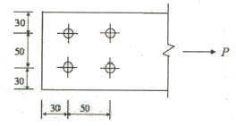
- 296 mm2
- 396 mm2
- 426 mm2
- 536 mm2
(정답률: 67%)
46. 그림과 같은 장방형 단면에서 X축에 대한 단면 2차 모멘트 값은?
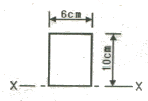
- 500 cm4
- 1000 cm4
- 1500 cm4
- 2000 cm4
(정답률: 50%)
47. 다음 그림과같은 부정정 보를 정정보로 만들기 위해 필요한 내부 한지의 최소 개수는?
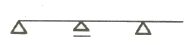
- 1개
- 2개
- 3개
- 4개
(정답률: 72%)
48. 다음 캔틸레버보의 자유단의 처짐각은? (단, 탄성계수 E, 단면 2차모멘트 I)
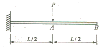
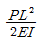
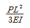
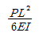
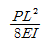
(정답률: 69%)
49. 단근보에서 하중이 재하됨과 동시에 순간처짐이 20mm가 발생되었다. 이 하중이 5년 이상 지속되는 경우 총 처짐량은 얼마인가? (단,
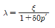
이고 지속하중에 의한 시간경과계수 ξ는 2이다.)- 30 mm
- 40 mm
- 60 mm
- 80 mm
(정답률: 65%)
50. 기초의 지정형식에 따른 분류에서 얕은 기초에 속하는 것은?
- 말뚝기초
- 직접기초
- 피어기초
- 잠함기초
(정답률: 60%)
51. 그림과 같은 압축재에 V-V 축의 세장비 값으로 옳은 것은? (단, A=10cm2 ,IV=36cm4)
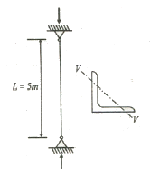
- 270.3
- 263.1
- 254.8
- 236.4
(정답률: 65%)
52. 2경간 연속보에서 반력 R의 크기는? (단, 부재의 E,I는 일정함)
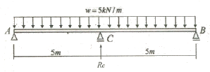
- 31.25 kN
- 25 kN
- 18.75 kN
- 11.25 kN
(정답률: 45%)
53. 플랫 슬래브가 큰 하중을 받을 때 기둥 주변에서 뚫림전단(punching shear)파괴의 위험이 발생한다. 뚫림전단을 검토하는 위치는? (단, d는 슬래브의 유효두께임)
- 기둥면 주변
- 기둥면에서 d/2만큼 떨어진 주변
- 기둥면에서 d/4만큼 떨어진 주변
- 기둥면에서 d만큼 떨어진 주변
(정답률: 64%)
54. 일단(一端)자유, 타단(他端)고정의 압축재의 길이가 7m일 때 유효좌굴길이는?(오류 신고가 접수된 문제입니다. 반드시 정답과 해설을 확인하시기 바랍니다.)
- 3.5 m
- 4.9 m
- 7.0 m
- 14.0 m
(정답률: 49%)
55. 아래 단면을 가진 철근콘크리트 기둥의 설계축강도(øPn)을 구하면? (단,øPn(max)=ø0.8Po, ø=0.65, fck=30MPa, fy=400MPa, d=66mm)
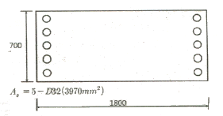
- 18254kN
- 28254kN
- 36414kN
- 37800kN
(정답률: 54%)
56. 다음 용접기호에 대한 옳은 설명은?
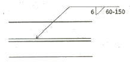
- 맞댐용접이다.
- 용접되는 부위는 화살의 반대쪽이다.
- 유효목두께는 6mm 이다.
- 용접길이는 60mm 이다.
(정답률: 50%)
57. 그림과 같은 구조물의 부정정 차수는?
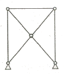
- 1차
- 2차
- 3차
- 4차
(정답률: 68%)
58. 그림과 같은 철근콘크리트 보의 중립축 위치(C)를 구하면? (단, fck=35MPa, fy=400MPa, d=540mm, β1=0.8, fs=fy이다.)
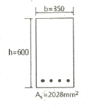
- 182.6mm
- 152.3mm
- 97.4mm
- 77.9mm
(정답률: 50%)
59. 밑면전단력 산정시 활용되는 지진응답계수를 구성하는 4가지 항목과 가장 거리가 먼 것은?
- 반응수정계수
- 건물의 중요도 계수
- 건물의 유효중량
- 건물의 고유주기
(정답률: 56%)
60. 그림과 같은 캔틸레버 보에서 B점의 처짐을 구하면?
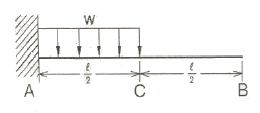
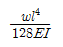
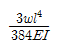
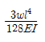
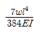
(정답률: 53%)
4과목: 건축설비
61. 다음 중 통기관의 설치목적과 가장 거리가 먼 것은?
- 배수의 원활
- 배수관의 환기
- 트랩의 봉수 보호
- 사이폰 작용 촉진
(정답률: 72%)
62. 다중이용시설 등의 실내공기질관리법령에 따른 실내공간 오염물질에 속하지 않는 것은?
- 오존
- 라돈
- 일산화질소
- 폼알데하이드
(정답률: 54%)
63. 정보통신설비는 정보설비와 통신설비로 구분할수 있다. 다음 중 통신 설비에 속하지 않는 것은?
- 전화설비
- 인터폰설비
- TV공청설비
- 전기시계설비
(정답률: 71%)
64. 비상콘센트설비에서 비상콘센트의 설치 위치로 가장 알맞은 것은?
- 바닥으로부터 높이 0.5m 이상 1.5m 이하의 위치
- 바닥으로부터 높이 0.8m 이상 1.5m 이하의 위치
- 바닥으로부터 높이 0.5m 이상 1.8m 이하의 위치
- 바닥으로부터 높이 0.8m 이상 1.8m 이하의 위치
(정답률: 62%)
65. 전양점 24m, 양수량 13.8m /h, 효율 60%일 때 펌프의 축동력은?
- 약 0.5 kW
- 약 1.0 kW
- 약 1.5 kW
- 약 3.0 kW
(정답률: 61%)
66. 증기난방방식과 비교한 온수난방방식의 특징으로 옳지 않은 것은?
- 예열시간이 짧다.
- 난방의 쾌감도가 높다.
- 난방부하 변동에 따른 온도조절이 용이하다.
- 한랭지에서 운전정지 중에 동결의 위험이 있다.
(정답률: 81%)
67. 다음 중 변전실 면적 결정시 영향을 주는 요소와 가장 거리가 먼 것은?
- 수전전압
- 수전방식
- 발전기 용량
- 큐비클의 종류
(정답률: 72%)
68. 가스설비에 사용되는 거버너(governor)에 관한 설명으로 옳은 것은?
- 실내에서 발생되는 배기가스를 외부로 배출시키는 장치
- 연소가 원활히 이루어지도록 외부로부터 공기를 받아들이는 장치
- 가스가 누설되거나 지진이 발생했을 때 가스공급을 긴급히 차단하는 장치
- 가스공급회사로부터 공급받은 가스를 건물에서 사용하기에 적합한 압력으로 조정하는 장치
(정답률: 76%)
69. 다음 중 습공기를 가열할 경우 상태값이 변하지 않는 것은?
- 엔탈피
- 절대습도
- 상대습도
- 습구온도
(정답률: 82%)
70. 정상상태에서 방수구를 막고 잇는 감열체가 일정 온도에서 자동적으로 파괴⋅용해 또는 이탈됨으로써 방수구가 개방되는 스프링클러헤드는?
- 건식 스프링클러헤드
- 개방형 스프링클러헤드
- 폐쇠형 스프링클러헤드
- 측벽형 스프링클러헤드
(정답률: 58%)
71. 오수 처리방법 중 물리 및 화학적 처리방법에 속하지 않는 것은?
- 오존을 이용하는 방법
- 산화제를 이용하는 산화법
- 미생물에 의한 호기성 분해 방법
- 응집제를 이용하여 부유물질을 침전시키는 방법
(정답률: 69%)
72. 옥내배선에서 전선의 굵기 산정의 결정요소에 속하지 않는 것은?
- 배전방식
- 허용전류
- 전압강하
- 기계적 강도
(정답률: 64%)
73. 배수트랩의 필요조건으로 옳지 않은 것은?
- 봉수깊이는 50mm 이상 100mm 이하일 것.
- 봉수부에 이음을 사용하는 경우 금속제 이음은 사용하지 않을 것
- 기구내장 트랩의 내벽 및 배수로의 단면형상에 급격한 변화가 없을 것.
- 봉수부의 소제구는 나사식 플러그 및 적절한 가스켓을 이용한 구조일 것.
(정답률: 62%)
74. 엘리베이터의 파이널 리미트 스위치에 관한 설명으로 옳지 않은 것은?
- 파이널 리미트 스위치와 일반 종단정지창지는 독립적으로 작동되어야 한다.
- 파이널 리미트 스위치의 작동은 완충기가 압축되어 있는 동안 유지되어야 한다.
- 우발적인 작동의 위험 없이 가능한 최상층 및 최하층에 근접하여 작동하도록 설치되어야 한다.
- 파이널 리미트 스위치의 작동 후에는 엘리베이터의 정상 운행을 위해 자동으로 복귀되어야한다.
(정답률: 62%)
75. 다음의 냉동기 중 기계적 에너지가 아닌 열에너지에 의해 냉동효과를 얻는 것은?
- 원심식 냉동기
- 흡수식 냉동기
- 스크류식 냉동기
- 왕복동식 냉동기
(정답률: 81%)
76. 다음 중 겨울철 실내 유리창 표면에 발생하기 쉬운 결로의 방지 방법과 가장 거리가 먼 것은?
- 실내공기의 움직임을 억제한다.
- 실내에서 발생하는 수증기를 억제한다.
- 이중유리로 하여 유리창의 단열성능을 높인다.
- 난방기기를 이용하여 유리창 표면온도를 높인다.
(정답률: 65%)
77. 에스컬레이터의 경사도는 최대 얼마를 초과하지 않도록 하여야 하는가? (단, 공칭속도가 0.5m/s를 초과하는 경위며 기타 조건은 무시)
- 25°
- 30°
- 35°
- 40°
(정답률: 79%)
78. 각종 공기조화방식에 관한 설명으로 옳지 않은 것은?
- 단일덕트방식은 전공기방식이다.
- 2중덕트방식은 냉ㆍ온풍의 혼합으로 인한 혼합 손실이 있다.
- 팬 코일 유니트 방식은 전공기방식으로 수배관으로 인한 누수의 우려가 없다.
- 단일덕트방식은 부하특성이 다른 여러 개의 실이나 존이 있는 건물에는 적용하기가 곤란하다.
(정답률: 77%)
79. 다음의 건축화 조명 중 천장면 이용방식에 속하지 않는 것은?
- 광창조명
- 코브조명
- 코퍼조명
- 광천장조명
(정답률: 52%)
80. 건축설비 관련 용어의 단위가 옳지 않은 것은?
- 상대습도 : %
- 비열 : KJ/kgㆍK
- 열전도율: W/m2ㆍK
- 열관류 저항: m2ㆍK/W
(정답률: 61%)
5과목: 건축법규
81. 비상용승강기의 승강장의 구조에 관한기준 내용으로 옳지 않은 것은?
- 채광이 되는 창문이 있거나 예비정원에 의한 조명설비를 할 것.
- 벽 및 반자가 실내에 접하는 부분의 마감재료는 불연재료 또는 준별연재료로 할 것.
- 피난층이 있는 승강장의 출입구로부터 도로 또는 공지에 이르는 거리가 30미터 이하일 것.
- 옥내에 승강장을 설치하는 경우 승강장의 바닥면적은 비상용승강기 1대에 대하여 6제곱미터 이상으로 할 것.
(정답률: 78%)
82. 부설주차장의 설치대상 시설물의 종류와 설치기준의 연결이 옳지 않은 것은?
- 위락시설: 시설면적 50m2 1대
- 종교시설: 시설면적 150m2 1대
- 숙박시설: 시설면적 200m2 1대
- 제2종 근린생활시설: 시설면적 200m2당 1대
(정답률: 78%)
83. 특별자치도 또는 시⋅군⋅구에 설치하는 건축종합민원실의 처리 업무에 해당하지 않는 것은?
- 건축관계자 사이의 분쟁에 대한 상담
- 건축물대장의 작성 및 관리에 관한 업무
- 정기점검 및 수시점검의 항목별 점검 업무
- 건축허가⋅건축신고 또는 용도변경에 관한 상담업무
(정답률: 51%)
84. 다음 중 시가화조정구역 안에서 허가를 거부할 수 없는 행위에 속하지 않는 것은?
- 1가구당 기존축사를 포함하여 300m2 이하의 축사의 설치
- 1가구당 기존 퇴비사의 면적을 포함하여 100m2 이하의 퇴비사의 설치
- 과수원에서 기존 관리용 건축물의 면적을 포함하여 66m2 이하의 관리용 건축물의 설치
- 시가화조정구역 안의 토지 또는 그 토지와 일체가 되는 토지에서 생산되는 생산물의 저장에 필요한 것으로서 기존 창고면적을 포함하여 그 토지면적의 0.5% 이하의 창고의 설치
(정답률: 54%)
85. 건축물의 출입구에 설치하는 회전문은 계단이나 에스컬레이터로부터 최소 얼마 이상의 거리를 두어야 하는가?
- 1m
- 2m
- 3m
- 4m
(정답률: 76%)
86. 다음 중 건축물관련 건축기준의 허용되는 오차의 범위(%)가 가장 큰 것은?
- 평면길이
- 출구너비
- 반자높이
- 바닥판두께
(정답률: 77%)
87. 다음은 지하층과 피난층 사이의 개방공간 설치와 관련된 기준 내용이다. ( )안에 알맞은 것은?
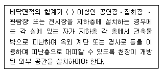
- 5백 제곱키터
- 1천 제곱미터
- 2천 제곱미터
- 3천 제곱미터
(정답률: 43%)
88. 각층의 거실면적이 1000제곱미터인 15층의 다음 건축물 중 설치하여야 하는 승용승강기의 최소대 수가 가장 많은 것은? (단, 8인승 승용승강기인 경우)
- 위락시설
- 업무시설
- 교육연구 및 복지시설
- 문화 및 집회시설 중 집회장
(정답률: 67%)
89. 다음과 같은 조건에 있는 지하 1층, 지상 2층 건축물의 용적률은?
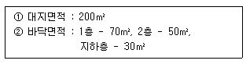
- 60%
- 75%
- 133%
- 167%
(정답률: 66%)
90. 건축물의 필로티 부분을 건축법상의 바닥면적에 산입하는 경우에 해당하는 것은?
- 공중의 통행에 전용되는 경우
- 차량의 주차에 전용되는 경우
- 업무시설의 휴식공간으로 전용되는 경우
- 공동주택의 놀이공간으로 전용되는 경우
(정답률: 75%)
91. 다음 중 대수선의 범위에 속하지 않는 것은?
- 특별피난계단을 증설 또는 해체하는 것
- 미관지구에서 건축물의 외부형태를 변경하는 것
- 다가구주택의 가구 간 경계벽을 증설 또는 해체하는 것
- 공동주택 중 기숙사의 침실 간 칸막이벽을 증설 또는 해체하는 것
(정답률: 60%)
92. 노외주차장의 차로의 최소 너비를 가장 크게 하여야 하는 주차형식은?
- 평행주차
- 직각주차
- 교차주차
- 60도 대항주차
(정답률: 69%)
93. 준주거지역 안에서 건축할 수 있는 건축물에 속하지 않는 것은?
- 단독주택
- 종교시설
- 운동시설
- 숙박시설
(정답률: 64%)
94. 지하식 또는 건축물식 노외주차장에서 경사로가 직선형인 경우, 경사로의 차로너비는 최소 얼마 이상으로 하여야 하는가? (단, 2차로인 경우)
- 5m
- 6m
- 7m
- 8m
(정답률: 73%)
95. 대형건축물의 건축허가 사전승인신청시 제출도서의 종류 중 설계설명서에 표시하여야 할 사항으로 옳지 않은 것은?
- 공사금액
- 개략공정계획
- 교통처리계획
- 각부 구조계획
(정답률: 67%)
96. 용도변경과 관련된 시설군 중 산업 등 시설군에 속하는 건축물의용도가 아닌 것은?(오류 신고가 접수된 문제입니다. 반드시 정답과 해설을 확인하시기 바랍니다.)
- 운수시설
- 창고시설
- 장례식장
- 발전시설
(정답률: 64%)
97. 다음 중 국토의 계획 및 이용에 관한 법률 시행령상 건폐율의 최대 한도가 가장 높은 용도지역은?
- 준주거지역
- 생산관리지역
- 중심상업지역
- 전용공업지역
(정답률: 75%)
98. 국토의 계획 및 이용에 관한 법률에 의한 기반시설 중 광장의 종류에 속하지 않는 것은?
- 교통광장
- 전시광장
- 지하광장
- 경관광장
(정답률: 54%)
99. 태양열을 주된 에너지원으로 이용하는 주택의 건 축면적 산정의 기준이 되는 것은?
- 외벽 중 내측 내력벽의 중심선
- 외벽 중 외측 내력벽의 중심선
- 외벽 중 내측 내력벽의 외측 외곽선
- 외벽 중 외측 내력벽의 외측 외곽선
(정답률: 72%)
100. 오피스텔에 설치하는 복도의 유효너비는 최소 얼마 이상이어야 하는가?
- 1.5미터
- 1.8미터
- 2.4미터
- 2.7미터
(정답률: 64%)